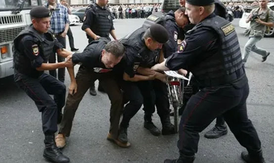

Классификация преступлений
Классификация — это метод научного познания, представляющий собой распределение большой совокупности объектов на классы по определенным признакам (критериям).
ЦИТАТА
В уголовном праве классификация преступлений – это деление преступлений на однородные группы по тому либо иному критерию.
Так, по формам вины преступления классифицируются на умышленные и неосторожные; по мотиву — на корыстные и некорыстные; по способу совершения — на насильственные и ненасильственные; по степени длительности – на длящиеся (считающиеся оконченными с момента совершения деяния и в таком состоянии длящиеся, пока виновный не будет задержан; например, побег из мест лишения свободы) и продолжаемые (состоящие из нескольких актов, объединенных единым умыслом; например, кража денег с банковского счета в несколько приемов).
Наиболее важное значение для уголовного права имеет классификация преступлений по характеру и степени общественной опасности на четыре категории преступлений: небольшой тяжести, средней тяжести, тяжкие, особо тяжкие (ст. 15 УК).
1) Преступления небольшой тяжести — это умышленные и неосторожные деяния, за совершение которых максимальное наказание не превышает трех лет лишения свободы (ч. 2 ст. 15 УК). Например, за истязание (ст. 117 УК РФ), т.е. причинение физических или психических страданий путем систематического нанесения побоев либо иными насильственными действиями, если это не повлекло последствий для здоровья, предусмотрено наказание до трех лет лишения свободы.
2) Преступления средней тяжести — это умышленные деяния, за совершение которых максимальное наказание не превышает пяти лет лишения свободы, и неосторожные деяния, за совершение которых максимальное наказание не превышает десяти лет лишения свободы (ч. 3 ст. 15 УК). Так, за грабеж, т.е. открытое хищение чужого имущества (ст. 161 УК РФ), предусмотрено лишение свободы до четырех лет лишения свободы.
3) Тяжкие преступления — это умышленные деяния, за совершение которых максимальное наказание не превышает десяти лет лишения свободы, и неосторожные деяния, за совершение которых максимальное наказание не превышает пятнадцати лет лишения свободы (ч. 4 ст. 15 УК). Например, за захват или удержание лица в качестве заложника, совершенные в целях понуждения государства, организации или гражданина совершить какое-либо действие или воздержаться от совершения какого-либо действия как условия освобождения заложника (ст. 206 УК РФ), предусмотрено наказание от пяти до десяти лет лишения свободы.
4) Особо тяжкие преступления — это только умышленные деяния, за совершение которых предусмотрено наказание в виде лишения свободы на срок свыше десяти лет или более строгое наказание (смертная казнь или пожизненное лишение свободы). Например, за убийство (ст. 105 УК РФ) предусмотрено наказание на срок от шести до пятнадцати лет лишения свободы.
С учетом фактических обстоятельств преступления и степени его общественной опасности суд вправе при наличии смягчающих наказание обстоятельств и при отсутствии отягчающих наказание обстоятельств изменить категорию преступления на менее тяжкую, но не более чем на одну категорию преступления при условии, что за совершение преступления, указанного в части третьей настоящей статьи, осужденному назначено наказание, не превышающее трех лет лишения свободы, или другое более мягкое наказание; за совершение преступления, указанного в части четвертой настоящей статьи, осужденному назначено наказание, не превышающее пяти лет лишения свободы, или другое более мягкое наказание; за совершение преступления, указанного в части пятой настоящей статьи, осужденному назначено наказание, не превышающее семи лет лишения свободы.
Классификация преступлений имеет не только теоретическое, но и практическое значение. Отнесение преступления к той или иной категории влечет определенные правовые последствия для лица, его совершившего, например, определение режима отбывания наказания в виде лишения свободы, применение условно-досрочного освобождения; влияет на квалификацию совершенных преступлений. Например, заведомо ложный донос, соединенный с обвинением лица в совершении тяжкого или особо тяжкого преступления (ч. 2 ст. 306), влечет наказание в три раза более строгое, чем неквалифицированный донос (ч. 1 ст. 306).
Малозначительность деяния
Часть 2 ст. 14 УК РФ закрепляет положение, согласно которому не является преступлением действие (бездействие), хотя формально и содержащее признаки какого-либо преступления, но в силу малозначительности не представляющее общественной опасности.
Например, подросток совершает кражу нескольких яблок из чужого сада. Можно ли признать это деяние преступлением и квалифицировать его как кражу по ст. 158 УК РФ? Нет, хотя все признаки налицо. Нередко малозначительное деяние, не являющееся преступлением в силу отсутствия общественной опасности, может образовать состав иного правонарушения — административного, дисциплинарного. Так, ст. 213 УК РФ определяет хулиганство как грубое нарушение общественного порядка, выражающее явное неуважение к обществу и сопряженное с насилием или угрозой насилия либо уничтожением или повреждением чужого имущества. Если лицо нарушает общественный порядок, выражая неуважение к обществу, не применяет насилия и не уничтожает имущество, то имеет место мелкое хулиганство (административное правонарушение).
Исследователи проблемы малозначительности уголовных деяний указывают на следующий парадокс: если деяние утрачивает признаки состава преступления (общественную опасность), то речь должна идти не о малозначительности деяния, а об отсутствии состава преступления в этом деянии. Законодатель фактически признает существование промежуточного вида негативного поведения лица, которое не укладывается в стандартное разделение административного правонарушения и уголовного преступления, поскольку оно находится между ними.
Также одни ученые-правоведы считают, что малозначительность возможна при совершении деяния, в котором общественная опасность присутствует, но недостаточно ярко выражена для признания деяния преступным. В этих случаях ответственность за совершенное деяние должна наступать по нормам иных отраслей права (административного, гражданского, дисциплинарного). Другие авторы считают, что к малозначительности деяния относятся лишь те деяния, которые абсолютно лишены общественной опасности и являются непреступными.